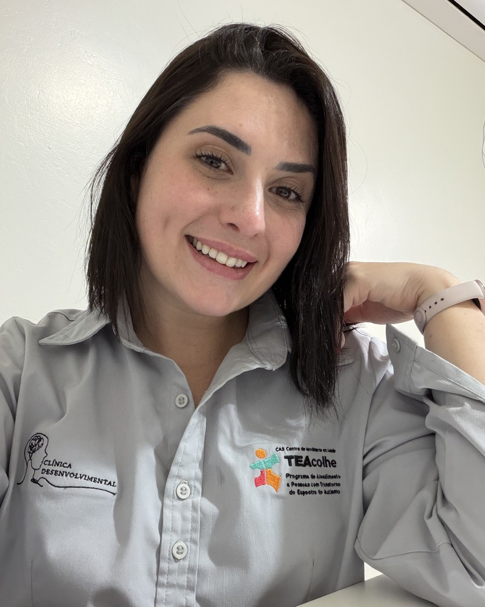

Cuidando do seu sorriso com atenção de verdade
Receba um atendimento personalizado, realmente pensado para as suas necessidades e objetivos — do check-up de rotina ao caso mais complexo.
Do primeiro contato ao acompanhamento
Avaliação individual
Um olhar completo para compreender suas necessidades, histórico, dificuldades e objetivos.
Plano personalizado para o seu caso
Definimos juntas as melhores estratégias e etapas para o seu tratamento.
Orientação profissional precisa
Explicações claras para que você compreenda cada decisão e participe do processo.
Acompanhamento próximo e contínuo
Quando necessário, o plano é ajustado para continuar fazendo sentido para você.

Formação sólida, atendimento próximo
Victória é cirurgiã-dentista formada pela Universidade de Passo Fundo (UPF) e atua na odontologia há mais de seis anos, com passagem por clínicas como OdontoEsthetic Master, SorriFácil e Doutor Sorriso antes de se dedicar ao atendimento particular. Tem pós-graduação em Endodontia, Ortodontia, Saúde Coletiva, Urgência e Emergência em Saúde e Patologia Bucal, além de especialização em andamento em Odontologia para o Espectro Autista.
Conheça os serviços →" Meu compromisso é fazer com que cada paciente se sinta ouvido e cuidado.
O que faz a diferença no atendimento
Pacientes especiais
Preparo para atender autistas, pessoas com síndromes e deficiência física ou motora.
Urgência e emergência
Formação específica para atender casos urgentes com segurança.
Visão multidisciplinar
Seis áreas de especialização, do diagnóstico ao tratamento completo.
Atendimento humanizado
Escuta próxima em cada etapa, de crianças a pacientes idosos.
Serviços
Áreas de atuação da Dra. Victória, da clínica geral às especialidades.
Clínica geral
Check-ups, diagnóstico, restaurações e acompanhamento contínuo da saúde bucal.
Saiba mais →Cirurgia oral menor
Extração de sisos e pequenos procedimentos cirúrgicos com segurança.
Saiba mais →Odontopediatria
Consultas lúdicas e acolhedoras para a primeira experiência da criança no dentista.
Saiba mais →Pacientes especiais
Atendimento qualificado a autistas, pessoas com síndromes, deficiência física ou motora, surdos e mudos, além de pacientes acamados.
Saiba mais →Vamos marcar sua consulta?
Responda o formulário ou entre em contato direto — normalmente respondemos em até um dia útil.
Ao lado da Cozinha Afetiva Amicce, na lateral do ginásio (antigo Maguary)